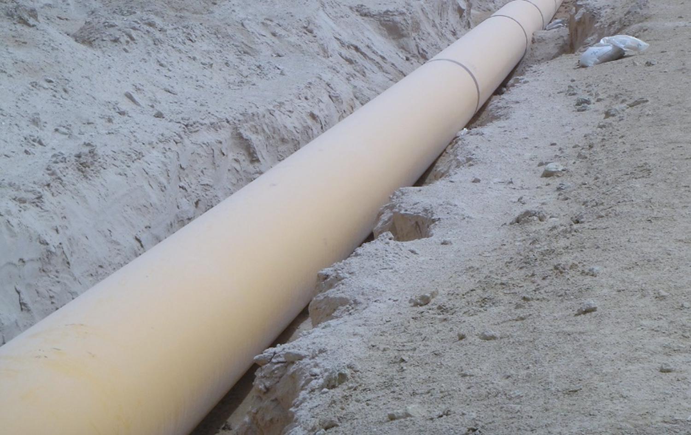
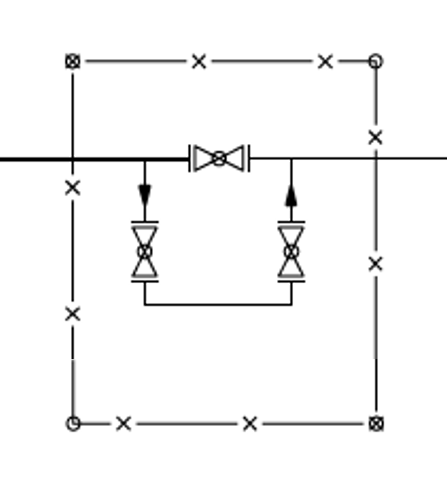

Pipeline Design Basis

This course marks the transition from plant piping into onshore pipeline engineering — a closely related but distinct discipline. Where plant piping lives inside the fence under ASME B31.3, the transmission pipeline runs for tens of kilometres across deserts, farmland and townships, buried and fully restrained by the soil around it, and governed instead by ASME B31.8 (gas), ASME B31.4 (liquids) and ISO 13623.
Module 1 sets the design basis: the flow assurance study, the coordinate system, route and corridor selection, spacing, sectionalizing valves and the optimization study that frames every later calculation.
What You Will Learn
- How an onshore pipeline project starts and the two main workstreams — flow assurance and pipeline design
- The purpose and outputs of a flow assurance study (steady-state and transient)
- How the coordinate system, datum, ellipsoid and UTM projection are defined for routing
- Route and corridor selection criteria, and pipeline-to-pipeline spacing rules
- Sectionalizing block-valve spacing by Location Class and emergency isolation valves
- What goes into a pipeline optimization (technical & economic) study
Section 1.0Course Introduction & Objectives
During the conceptual design phase the client typically provides a project overview — the purpose of the pipeline, start and tie-in points, approximate length, expected daily flow rate, and a preliminary diameter. From that the pipeline engineer begins, and the work divides into two streams:
- Flow Assurance Study — steady-state and transient analysis to fix a preferred diameter that carries the maximum flow between the inlet and delivery pressure limits, and to assess surge.
- Pipeline Design — the core engineering: specification, wall thickness, route/corridor drawings, crossing and valve-station details, plot plan, schematics, supports and anchors, hydrotest diagram, ductile-fracture study and (sometimes) the material requisition.
Module 1 — design basis & routing. Module 2 — wall thickness & code sizing. Module 3 — pipeline stress. Module 4 — buried-pipe design. Module 5 — integrity (fracture, coating, buckling). Each lesson is numbered for easy reference, starting at 1.0.
Section 1.1Flow Assurance Basic Theory
Flow assurance is the engineering process of guaranteeing that produced fluids can be transported reliably and economically from the reservoir to the delivery point throughout the entire life of the field. It combines knowledge of fluid behaviour with thermal-hydraulic analysis to develop strategies that keep the flow path clear of anything that would obstruct, restrict or stop production.
The term was coined by Petrobras in the early 1990s, originally covering only the thermal-hydraulic and production-chemistry problems of offshore production. The problems themselves are far older — hydrate blockages were recognised in gas pipelines in the 1930s, and methanol was already in use to suppress them. What changed was the move into deepwater and long tiebacks, where a single blockage can shut in a development for weeks. Today the discipline spans the earliest concept-selection decisions through to abandonment.
Flow assurance is fundamentally a life-of-field discipline. A line that flows perfectly on day one may struggle in late life as reservoir pressure declines, water cut rises, and flow rates fall below the minimum needed to stay above the hydrate and wax boundaries.
For an onshore transmission pipeline, the primary goal is to select an optimal configuration that ensures reliable hydraulic performance and robust operability over the pipeline's life — introducing mitigations, where necessary, against upsets from the fluid's thermo-hydraulic characteristics or its production chemistry.
The two branches of flow assurance
Flow assurance rests on two complementary pillars:
- Fluid hydrodynamics — the physics of how the fluids move through the pipe: multiphase flow regimes, slugging, liquid holdup, pressure drop and erosion. It asks "will it flow?"
- Production chemistry — what the fluids do as pressure and temperature change along the line: hydrates, wax, asphaltenes, scale, emulsions, foaming and corrosion. It asks "will it stay clean while it flows?"
The principal flow assurance threats
For a given fluid, each solid appears within a specific window of pressure and temperature, then deposits on the pipe wall — progressively narrowing the bore until the line plugs.
| Threat | What it is | What triggers it | Typical mitigation |
|---|---|---|---|
| Hydrates | Ice-like crystals of gas and water | High pressure + low temperature | Insulation, depressurisation, MEG / methanol |
| Wax (paraffin) | Long-chain hydrocarbons crystallising out | Wall temperature below the WAT | Insulation, pigging, wax inhibitors |
| Asphaltenes | Heavy organic solids that precipitate | Pressure drop, incompatible blending | Dispersants, pressure management |
| Scale | Inorganic mineral deposits | Mixing of incompatible waters | Scale inhibitors, water management |
| Slugging | Intermittent surges of liquid and gas | Terrain, riser geometry, low rates | Slug catchers, control strategy, line sizing |
| Erosion / corrosion | Wall loss from velocity or chemistry | High velocity, CO₂ / H₂S, water | Material selection, velocity limits, inhibitors |
Hydrates are usually the most feared — they form fastest and can plug a line during cooldown and restart, exactly when the fluid is coldest. Slugging matters most to the pipeline engineer: its intermittent pressure and flow surges impose cyclic loads on the pipeline–riser system that become real cases for stress and support design.
The flow assurance workflow
Although every project differs, the flow assurance process has become standardised into a recognisable sequence, front-loaded into FEED — getting it wrong early is enormously expensive to correct later.
Reading the stages in turn:
- 1 — Fluid characterisation. Validate the reservoir-fluid data and identify which issues apply. Outputs: PVT data, wax properties, the hydrate curve, asphaltene-stability and scale assessment.
- 2 — Steady-state thermal-hydraulics. Establish the concept under steady flow. Outputs: flowline pressure and rate, line size, maximum allowable slug size, insulation requirement.
- 3 — Transient thermal-hydraulics. Test under changing conditions — start-up, shut-down, blowdown, warm-up — with the risk and safe-operating analysis. This is where the real risk lives, because cooldown after a shut-in is when hydrates and wax form.
- 4 — Re-evaluate the preferred concept. Candidate concepts are screened on CAPEX and OPEX; note the feedback loop — the economics feed back into the technical choice.
- 5 — Detailed analyses. Take the fixed concept to detailed design: operating logic, chemical-injection type and rates, storage volumes, host-facility requirements.
- 6 — Risk management plan. Update the FA risk management plan and develop the operating guidelines; produce the final CAPEX / OPEX and tender packages.
Steady-state and transient analysis
Two analysis modes run through the workflow. The study begins with the steady-state model, built from the start point to the end point. Common tools include OLGA (transient and steady-state) with Multiflash or PVTsim for fluid PVT behaviour. The model needs route topography, layout configuration and pipe geometry; fluid composition is defined as a proportion of the production rate, together with all process data — scenarios, inlet pressure, tie-in pressure and MAOP. Simulations are run for a range of diameters; pressure and temperature are evaluated and hydrate (or other) risk assessed. The analysis identifies hydraulic capacity, velocity and erosional velocity, and defines steady-state operating pressures/temperatures as input to the mechanical design. The preferred diameter is selected on hydraulic capacity and flow stability.
Once steady-state is complete, the transient analysis captures time-dependent behaviour:
- Ramp-up — liquid surge and gas-rate increase developed during ramp-up from turndown.
- Ramp-down — the transition period to reach a new steady state after a flow reduction.
- Scraping — liquid surge into the slug catcher generated during pigging.
The transient work also confirms the selected size is fit for purpose for the required maximum flow, inlet pressure and tie-in pressure. As a rule of thumb: steady-state sizes the system, while transient exposes the genuine hazards during start-up, shut-in and restart.
Software used in the oil & gas industry
Flow assurance is almost entirely simulation-driven. A fluid-characterisation (PVT) layer feeds validated fluid models into the hydraulic simulators, which split into steady-state and transient packages.
| Tool | Vendor | Type | Primary use |
|---|---|---|---|
| PIPESIM | SLB | Steady-state multiphase | Line sizing, nodal analysis, arrival conditions |
| OLGA | SLB | Transient multiphase | Start-up, shut-in, cooldown, pigging, slugging |
| LedaFlow | Kongsberg | Transient multiphase | Same transient scope as OLGA |
| PVTsim Nova | Calsep | PVT / fluid model | Fluid characterisation, solids boundaries |
| Multiflash | KBC / AspenTech | PVT / fluid model | Fluid characterisation, solids boundaries |
| HYSYS / Symmetry | AspenTech / SLB | Process simulation | Topside facilities at the system boundary |
The usual progression is PIPESIM first for steady-state sizing, then OLGA (or LedaFlow) for the transient studies — always with a PVT package such as PVTsim or Multiflash underpinning the fluid model. Transient-tool licences are expensive, which is one reason many operators outsource transient studies to specialist consultancies.
Section 1.2Coordinate System
The coordinate system for routing must be agreed and defined at the outset:
- Geodetic Datum — an abstract coordinate system referenced to a surface such as sea level, providing known locations from which to begin surveys.
- Reference Ellipsoid — the preferred surface for geodetic computation and point coordinates. The Hayford Ellipsoid (International Ellipsoid 1924, adopted by the IUGG in 1924) is commonly recommended.
- Projection — Universal Transverse Mercator (UTM), a plane-coordinate grid named for the Transverse Mercator projection.
Section 1.3Pipeline Routing
The initial route is developed from the client's planimetric data. Any existing corridor is evaluated to find the best location for the new line, accounting for constructability and feasibility. Key considerations:
- Use the existing corridor and right-of-way as far as possible to minimise construction and civil works.
- Optimise pipeline length and the number of bends.
- Reduce cut-and-fill along the right-of-way.
- Maintain proximity to existing infrastructure.
- Minimise the number of crossings.
- Avoid environmentally and ecologically sensitive areas.
Once these are addressed, the layout is drawn in AutoCAD and overlaid in Google Earth Pro.
Section 1.4Pipeline Spacing
Spacing between a new and an existing pipeline on the same corridor follows common practice and the client standard. Adequate clear distance (OD to OD) allows installation and future repairs with minimum risk to the adjacent line.
- Minimum 9 m clear distance (OD to OD) where the two lines are built at different times.
- Minimum 3 m where both are installed at the same time, on the same project by the same contractor.
- Where a buried line surfaces, the rules for aboveground structures/piping apply.
Spacing also applies between the new pipeline and adjacent facilities — overhead power lines, communication towers, burn pits, wells. Each company sets its own clearance to overhead power lines.
Section 1.5Sectionalizing Block Valves & Emergency Isolation
Block valves isolate the pipeline for maintenance and emergencies. Placement prioritises continuous accessibility, and spacing follows ASME B31.8 (gas) or B31.4 (liquid). For gas transmission, ASME B31.8 gives, for guidance:
- Approximately 32 km — Location Class 1
- Approximately 24 km — Location Class 2
- Approximately 16 km — Location Class 3
- Approximately 8 km — Location Class 4
ASME B31.8 permits valves aboveground, in a vault, or buried; the operating device must remain accessible to authorised personnel, at the operating company's discretion.

Emergency Isolation Valves
For some services, EIVs isolate the line during a leak or fire. They are placed between sections of differing class, within the lower class, at boundaries such as Class 1/3, Class 2/3, Class 2/4 and Class 3/4.
Section 1.6Pipeline Optimization Study
Every new pipeline is studied for technical and economic feasibility. Depending on client requirements the study usually includes:
- Pipe geometrical properties
- Pipe material selection
- Routing, construction method and cost analysis (capital, operation, maintenance)
- Area classification
- Operating conditions
- Constructability
- Expected flow rate, flow pattern and velocity limitation
- Corrosion protection requirements
- Hydraulic and flow assurance studies
Module 1 — Summary & Key Takeaways
The design basis that frames every later pipeline calculation.
- An onshore project splits into a flow assurance study (sizing/operability) and the pipeline design itself.
- Flow assurance fixes the preferred diameter and supplies operating P/T as input to the mechanical design.
- The coordinate system (datum, ellipsoid, UTM) must be agreed before routing begins.
- Route selection maximises use of existing corridor and minimises bends, cut-and-fill and crossings.
- Sectionalizing block-valve spacing follows Location Class — roughly 32 / 24 / 16 / 8 km for Classes 1–4.
Self-Assessment Questions
- What are the two main workstreams when a new onshore pipeline project begins?
- Name the three transient scenarios a flow assurance study typically addresses.
- Which flow assurance threat is generally the most feared, and why?
- Which software is used for steady-state line sizing, and which two are the industry-standard transient multiphase simulators?
- What clear distance (OD to OD) is required between two parallel lines built at different times?
- Give the approximate sectionalizing-valve spacing for Location Classes 1 through 4 under ASME B31.8.